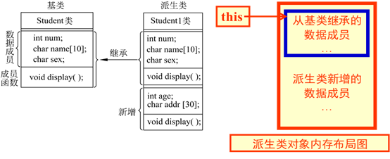

C++|从C到C++快速入门
简述C++
- C语言是面向过程的一门编程语言，“将要解决的问题分解成一个个小问题，依次解决”
- C+ +是对C语言的扩展和增强 : 面向对象、通用算法(泛型编程)
待更
标准库
C++ 中包含了C标准库的移植版本，C标准库的头文件xxx.h 基本上 变成了cxxx。
如stdio.h在C+ +中对应的是cstdio、math.h变成 了cmath、string.h变成 了cstring等
当然，并不是所有头文件都是如此，如malloc.h仍然不变。
## 条件编译
在C语言中，我们学过 条件编译，使用方法如下：
1 |
|
功能为：如果#if后的条件表达式为真，则程序段 1 被选中，否则程序段 2 被选中。
注意，必须使用 #endif 结束该条件编译指令。
当然不止有以上的使用，还有将是否进行了某宏定义作为触发条件的条件编译。
| 条件编译指令 | 说明 |
|---|---|
#if | 如果条件为真，则执行相应操作 |
#elif | 如果前面条件为假，而该条件为真，则执行相应操作 |
#else | 如果前面条件均为假，则执行相应操作 |
#endif | 结束相应的条件编译指令 |
#ifdef | 如果该宏已定义，则执行相应操作 |
#ifndef | 如果该宏没有定义，则执行相应操作 |
条件编译在编写头文件的时候可以防止重复引用造成的程序错误问题，现已成为编写头文件时墨守成规的格式了。
1 |
|
## 名字空间
名字空间 可以类比于存放变量名的空间。某个变量在当前名字空间下所代表的含义可以与其他名字空间的变量不同。
例如不同班级都可能有同名的学生，如“张伟”，为防止对象名冲突，因此需要使用空间限定。
- 计科1701:: 张伟
- 机械1 803:: 张伟
名字空间除了系统定义的名字空间之外，还可以自己定义，定义名字空间用关键字namespace，使用名字空间时用符号::对其指定。
- 不指定名字空间的变量或函数都是当前名字空间下的变量或函数。
- 不定义名字空间的情况下，都属于全局名字空间。
- 同一个名字空间可以定义多次
使用：
名字空间::名字：每次需要使用该名字空间下的对象时，在main()内部通过此代码代替对象明本身。using 名字空间::名字：在开头进行声明，代表此后的对象名字为名字的对象都代表的是名字空间里的那个变量using namespace std：在开头声明引入名字空间中所有的名字，此后就不再重复对某个变量进行限定了,类似于java/python中的import的功能
下面将以C++的输入输出流为例，更好的理解名字空间。
C++的输入输出
除了C标准库的
stdio.h中提供的函数scanf()和printf()外，C++自己也有一种输入输出的方式
输入与输出
头文件#include<iostream>：
cout是一个标准输出流变量（对象），代表控制台窗口cin是一个标准输入流变量（对象）endl是标准换行符对象，等效于字符中的\n。以上三者均需要通过名字空间进行限定才能使用
std就是 一个名字空间，而cout就是名字空间std内部的一个(对象)名字使用时需要加上名字空间限定
std::cout(如果之前没有声明的话)<<除了作为左移运算符之外，在C++中可作为输出运算符。如语句：
cout << x中，x是一个数据，该语句可以实现“打印”x的数据。>>除了作为右移运算符之外，在C++中可作为输入运算符。如语句：
cin >> x中，x是一个变量，该语句可以实现“输入”并对x赋值。
~cout和cin可以看出其实就是c-plus-output和c-plus-input即输出与输入的缩写~
举例
1 |
|
1 |
|
1 |
|
从上述例子中，我们领会到了名字空间的使用，也不难发现，输出流可以串起来使用！
如：cout << "finish" << std::endl;
而 输入的使用如下，输入同样也能够实现连续输入：
1 |
|
不仅如此，C++还支持有对文件的输入输出……
初看·文件输入输出
此处涉及到之后要学习的 类 和 方法 的知识，可选择性查看
之后还会再次详细介绍
头文件#include<fstream>：
- 类：
ofstream输出流对象，以此来实现对文件的输出（类似于c的fprintf） - 类：
ifstream输入流对象，以此来实现对文件的输入（类似于c的fscanf） - 方法：
xxx.close()通过此方法实现对文件的关闭（类似于c的fclose()）
举例
1 |
|
引用变量
引用变量是其他变量的别名。如同一个人的外号或小名。
既然是引用， 定义引用变量时就必须指明其引用的变量主体。而且定义之后不可更改。如：
1 | int a = 3,b = 4; |
其本质类似于C中的指针：
1 | int a = 3; |
我们知道，在C语言中，想要使用一个函数来更换a，b的值，不使用指针的方式是无法达到实际更改的。
具体实现方法：
1 |
|
而有了C++的“引用”之后，我们能够得到一种新的解决方案：
1 |
|
默认参数&函数重载
默认形参
在真正的标准C语言中，是不支持“默认形参”的
而且，定义变量必须在真正意义上的语句之前。
如：
printf("你好！\n");int a = 0;是不被允许的！此外，
for(int i=0;i<5;i++)即在for循环处直接定义变量也是错误的！但是在之后更为人性化的C标准修订之后，有些语法是可以通过的，可以说C和C++大致上共通了，所以默认形参在C中也被广泛使用。
关于在C中使用默认形参的方法：https://blog.csdn.net/pipisorry/article/details/25437893
默认参数指的是当函数调用时，可以省略传递实参而自动使用的一个默认值。例如，将void wow(int n)设置成n有默认值为1，则函数调用wow()相当于wow(1)。这极大地提高了使用函数的灵活性。
==默认形参必须在非默认形参右边，即一律靠右==
即 形如 void fn(int x=0,int d)的函数定义方法是错误的。
函数重载
==C+ +允许同一作用域里有同名的函数，只要它们的形参不同。==
函数重载是根据 函数签名 实现的，而函数签名则是由函数名与函数形参共同决定，与返回值无关.例如：
1 | int add(int x,int y); |
- 上述两种函数并不会发生冲突
1 | int add(int x,int y); |
- 上述两种函数会发生冲突
1 | int add(int a,int b,int c); |
- 上述两种函数不会发生冲突
函数模板
在上述例子中，我们给出了两个add()函数，可以方便计算int和double型的两数之和，但是需要编写两个重复性的代码，不便于后期修改与处理。
因此，我们可以通过函数模板来实现高效的函数声明与定义：
1 | template <typename T> |
实现了传入类型为T的值，并返回类型为T的返回值。
使用函数时，通过 模板实例化调用函数：
1 | cout << add<int>(3,5) << endl; |
用尖括号框住数据类型，则T就代表该数据类型，此方法类似于：
1 | typedef int T; |
但是，上面的这个T是不可灵活更改的。
事实上，模板拥有自动推断的功能，在上述例子中，我们调用函数时甚至可以不加尖括号，直接调用：
1 | cout << add(3,5) << endl; |
动态内存分配
在C中，我们曾经使用malloc函数对变量进行动态内存的分配，而C++中也可以进行这样的操作。
不仅如此，C++还提供了一种更加便利的方法：
1 | int main(){ |
事实上，这是极其简单，甚至有BUG的写法，比较完备的写法如下：
1 | int main(){ |
二维数组的动态分配
String & Vector
在之前的各种示例中，我们多次使用到string这个“变量类型”。其实，这是一个C++中系统内部的class类。（类与C中的结构体类似，之后会有详细解释）
string基本使用
与C中的字符与字符数组组成的字符串有异同，string实例可以通过调用 方法、成员 实现许多功能。所需头文件<string>
赋值/初始化
1
2string str = "hello world";
string str2("hello minecraft");- 以上两种方式都可以创建一个string实例
部分方法
1
2
3
4s.size(); //返回s这个字符串的大小（int）
s.substr(a,b); //返回s这个实例对象的第a到b截到的新字符串，类型也是string
s.find("xxx"); //返回int型下标，即s中出现xxx字符串的第一个下标position
s.insert(pos,"xxx"); //在s中下标为pos的地方插入字符串"xxx"运算
1
2
3
4
5
6
7
8
9
10
11s = s1 + s2;
/*
将s1与s2拼接在一起得到的新string对象赋给s
(此处+号的逻辑是我们之后需要了解的 运算符重载)
*/
s[4] = 'H';
/* 下标运算符
与C一样，string对象同样也是字符数组组成的字符串
也可以通过下标确切地更改字符串单个字符的内容
*/
vector基本使用
vector，向量，类似于C/C++中的数组，但是其长度可以动态增长，所需头文件<vector>
又与上面的string(类)有些许不同，vector是一个类模板。如，使用vector<int>就能实例化一个int型的vector类(向量)。
赋值/初始化
1
2vector<int> v; //int型空向量
vector<double> v2 = {1.1,2.2,3.3}; //double型默认起始长度是3的向量方法与成员
1
2
3
4v.push_back(x); //在v向量末尾添加一个数据x
v.pop_back(); //删除最后一个数据
v.size(); //返回向量此时的长度
v.resize(n); //从第一个起，将v向量截断使size为n
面向对象
在前面的学习中，我们多次提到了 “类”、“对象”等词汇。接下来我们将真正进入面向对象的世界~~
创建类与对象
一般在开发中，常常把类的创建独立出来用头文件
.h来 “保存” 我们“造的轮子”
通过关键词：class + 自定义的类名 进行类的创建
快速开始
基础示例：
1 | class ClassName{ |
这与C语言的结构体类似，不同的是，类可以将函数也作为内部成员，这种在类里面声明/定义的函数我们一般称之为类的方法。
使用
1 | int main(void){ |
与C语言的结构体类似，直接通过类名+.+成员调用.
访问运算符
通过访问控制符一定程度上可以保证程序的安全性，灵活使用可以使得类的外部不能轻易使用 私有属性和方法
示例：
1 | class People |
类的访问控制符有四种：
public可以通过外部访问方式访问类内部的public成员
private不能通过外部访问方式访问类内部的private成员
protected不可以通过外包访问方式访问类内部的protected成员
默认【即不加任何修饰符
default】
在一个类的内部，所有的成员可以相互访问,访问控制符是透明的;访问控制符是针对外部而言的
外部访问包括两种方式：
- 通过类名访问类内部的成员
- 通过类对象名访问类内部成员
==更多访问控制符的使用我们将在继承与包的学习中再次提及==
规范书写
一般，我们将函数方法作为public成员，而变量成员作为private成员。下面给出C++类创捷的规范书写
1 | class ClassName |
这时候就会产生疑问了。规范书写的ClassName()和~ClassName()是什么？
如果是变量成员为什么有括号？如果是函数为什么没有返回值？而且为什么名字和类名一模一样？
这就是 构造函数和析构函数!
构造函数
malloc不会使用构造函数
析构函数
参数化表
参数化表
1 | CBox(int l=10,int w=20,int h=30):l(l), |
this指针
抽象、封装与信息隐藏
普通常量
常量（
const）：共用数据的保护使得数据能够在一定范围内共享，又保证数据不被任意修改
常对象
功能：常对象数据成员的值是常量，不能修改
格式：
类名 const 对象名[(实参表)]const 类名 对象名[(实参表)]
- 说明：
1）常对象必须进行初始化，而且不能被更新;
2）常对象不能调用该常对象的非const型的成员函数；除非把要调用的成员函数定义为常成员函数const.
【避免非const型的成员函数修改常对象中的数据成员的值，因为const型的成员函数不能修改对象中的数据成员的值】
- 举例：
1 |
|
常函数
前面的示例代码中，我们提到：
常对象不能调用该常对象的非const型的成员函数；除非把要调用的成员函数定义为常成员函数const
也就是说，函数也是可以定义为常函数的。
格式
<返回值类型> <函数名> (<参数表>) const {代码块}注意
常成员函数不能调用另外一个非cosnt成员函数
有时在编程时有要求，一定要修改常对象成员中的某个数据成员的值（例如类中有一个用于计数的变量count，其值应当不能变化）此时可把该数据成员声明为mutable，如：mutable int count; : 定义一个在常对象中可以被改变的数据成员
把count声明为可变的数据成员，这样就可以用声明为const的成员函数来修改它的值。
- 再举例：
1 | class Student{ |
- 语句0：利用参数化表的形式编写构造函数，这样可以对
const的对象进行初始化 - 语句1&语句2：将成员函数设置为
const型函数常量，这样可以通过const的对象调用 - 语句3&语句4：将成员变量设置为
mutable类型，这样可以使得const型函数对其进行修改 - 语句5：先定义一个
const的类对象，然后对应于语句0可以进行初始化
常成员
- 格式：
const <类型> <数据成员变量名>
例：const int hour; - 说明：只能通过构造函数的参数初始化表对常数据成员进行初始化。任何地方都不能使用赋值语句对常数据成员赋值。
在类体中声明了某一个数据成员为常数据成员后，该类所有对象中的该数据成员的值都是不能改变的，但不同对象中该变量成员的值可以是不同的（分别在初始化时指定）
- 举例：
1 |
|
总结
- 如果在一个类中，有些数据成员的值允许改变，另一些数据成员的值不允许改变，则可以将一部分数据成员声明为
const，以保证其值不被改变，可以用非const的成员函数引用这些数据成员的值，并修改非const数据成员的值。 - 如果要求所有的数据成员的值都不允许改变，则可以将所有的数据成员声明为
const，或将对象声明为const(常对象)，然后用const成员函数引用数据成员，这样起到“双保险”的作用，切实保证了数据成员不被修改。 - 不要误认为常对象中的成员函数都是常成员函数，常对象只保证其所有数据成员的值不被修改。
- 如果在常对象中的成员函数未加
const声明，则编译系统会把它当非const成员函数处理。 - 常成员函数不能调用另外一个
非cosnt成员函数。
指针常量
- 定义
将指向对象的指针变量声明为const型，指针值（地址）不变【编号不变】。（地址指向的内存中的内容可以改变）。 - 格式
<类名> * const <指针变量名>; - 举例
1 | int a = 1; |
- 说明
- 可以保证指针的值不被改变，维护了安全性
常量指针
格式：定义指向常对象的指针变量的一般形式
const <类名>* <指针变量名>;
说明：
如果一个对象已被声明为常对象，只能用指向常对象的指针变量指向它
而不能用一般的 (指向
非const型对象的) 指针变量去指向它1
2
3Time const t(12,45,45);
Time *p = &t;//报错，不能指向常对象
const Time *q = &t;//成功如果定义了一个指向常对象的指针变量，并使它指向一个
非const的对象，则其指向的对象是不能通过指针来改变的1
2
3Time t(12,45,45);
const Time *p = &t;
t.ChangeHour(11);//报错，指向t之后，t不能再改变了指向常对象的指针最常用于函数的形参，目的是在保护形参指针所指向的对象，使它在函数执行过程中不被修改
常引用
1 | class Time{ |
经常用常指针和常引用作函数参数。这样既能保证数据安全，使数据不能被随意修改，在调用函数时又不必建立实参的拷贝。用常指针和常引用作函数参数，可以提高程序运行效率。
静态成员
目的：在同类的多个对象之间实现数据共享，不用全局对象，而用静态的数据成员。（例：学生类中的平均分、最高分等）
静态成员是同一个类中所有对象共享的成员，不是某一对象的成员。
用静态数据成员可以节省内存，是所有对象所公有的，对多个对象来说，静态数据成员只存储一处，供所有对象共用。
静态数据成员的值对每个对象都是一样，它的值是可以更新的。静态数据成员是静态存储的，具有静态生存期。
- 声明：通过关键词
static对成员进行声明- 如：
static float num;
- 如：
- 初始化：一般情况下，类的静态成员不能直接在声明的时候赋予初值，要在类外部实现
float ClassName::num = 10;<变量类型> <类名>::<变量名> = <初始值>;- 即 无需再加
static关键词
- 使用：
- 通过生成的实例对象名引用：
<对象名>.<静态成员名> - 通过类名引用静态数据：
<类名>::<静态成员名>
- 通过生成的实例对象名引用：
静态成员函数
目的：使用静态成员函数引用静态数据成员
声明/定义：例子：
static void print();说明：
静态成员函数属于类的静态成员，不是对象成员。对静态成员的引用不需要用对象名
在静态成员函数的实现中不能直接引用类中说明的非静态成员，可以引用类中说明的静态成员。
如果静态成员函数中要引用非静态成员时，可通过对象来引用。
1
2
3
4//静态成员函数内部：
cout<<height<<endl; //height为static，引用本类中的静态成员，合法
cout<<width<<endl; //width是非静态数据成员，不合法
cout<<a.width<<endl; //引用本类对象a中的非静态成员公有的静态成员函数既可以有通过相应的对象访问，也可以通过其所属的类名来引用。
1
2Box::print();//合法
box1.print();//也合法
实例：
1
友元函数
类外访问公用成员(public);只有本类中的函数可以访问本类的私有成员(private);
特例：友元(friend)可以访问与其有好友关系的类中的私有成员(private).
- 定义：
在类的声明语句中的public部分加入friend <返回类型> <其他地方的函数名>(<参数表>)
则该函数可以访问类中的私有成员（private） - 使用:
1）将普通函数声明为友元函数
类模板
在前面的学习中，我们给出了C++标准库中的vector的基本使用。如想要创建int型的向量组，仅需通过以下语句定义：
1 | vector<int> a={0,1,2,3}; |
之后我们学习到类之后，我们可以发现，vector就是一个类，我们通过类的实例创建的方式得到了名字为a的对象。
那么，<int>又代表什么呢？这将是接下来要讲的 类模板。
运算符重载
以下均以 “复数类模板” 作为例子一一介绍运算符重载极其优势
单目
输入输出流重载
1 |
|
继承
继承好处
解决软件重用（software reuseablility）问题，可以利用已有的软件资源，节约人力、物力、财力、时间，效率高
定义
继承是使用已存在的类的定义作为基础建立新类的技术.
新类的定义可以增加新的数据或新的功能，也可以用父类的功能，但不能选择性地继承父类。
通过使用继承我们能够非常方便地复用以前的代码，能够大大的提高开发的效率。
（1）子类拥有父类非private的属性和方法。
（2）子类可以拥有自己属性和方法，即子类可以对父类进行扩展。
（3）子类可以用自己的方式实现父类的方法。（多态）
继承方式
用于规定派生类中由基类继承到的那部分成员在派生类中的访问控制权限。
继承方式用下述三个关键字之一来指定：public：公有继承；protected：保护继承；private：私有继承。
注：构造函数和析构函数不能被继承
下面给出不同继承方式的差异对比：
| 继承方式 | 基类中访问权限 | 派生类中访问权限 |
|---|---|---|
| 公有继承 | public | public |
| protected | protected | |
| private | 不可访问 | |
| 私有继承 | public | private |
| protected | private | |
| private | 不可访问 | |
| 保护继承 | public | protected |
| protected | protected | |
| private | 不可访问 |
子类的构造函数
构造函数不能被继承，只能通过调用！！
逻辑：构造函数初始化过程是从父类“向外”扩散的，也就是从父类开始向子类一级一级地完成初始化。
两种情况：
（1）自动调用父类构造函数：父类有默认构造函数
（2）明显的调用父类构造函数：父类没有默认构造函数。C++中要求在子类的构造函数中，使用参数化表的方式，调用父类没有默认构造函数
例子：
1 |
|
继承时的构造原则：
1）如果子类没有定义构造函数，那子类就是调用父类的无参数的构造函数。
2）如果子类定义了构造函数，那么不管父类有没有定义构造函数，在创建子类对象时，首先会调用父类的无参数的构造函数，然后在调用子类自己的构造函数。
3）在创建一个子类对象时，如果子类没有显示调用父类的构造函数，那么就会首先调用父类的默认的无参的构造函数（其实和上面的2是一样的）。
4）在创建子类对象时，如果此时父类有自己书写了无参的构造函数，此时如果子类没有显示的调用父类的构造函数，那就就会首先调用父类自己书写的的无参的构造函数。
5）在创建子类对象时，如果父类只有有参的构造函数，子类没有显示的调用的父类的构造函数，则会出错。因为如果父类只有有参的构造函数，那么子类就必须显示调用父类有参的构造函数，
6）如果子类显示调用父类的有参构造函数，那么必须使用初始化列表形式进行初始化。
子类对象的内存模型

赋值兼容规则
公有继承下的赋值兼容规则
公有派生类的对象可赋给其基类对象，基类对象不能赋给派生类对象的规则，称为赋值兼容规则。
1 | //已知： |
1）派生类对象可以向基类对象赋值。
2）派生类对象可以替代基类对象向基类对象的引用进行赋值或初始化。
3）如果函数的参数是基类对象或基类对象的引用，相应的实参可以用子类对象。
4）派生类对象的地址可以赋给指向基类对象的指针变量，也就是说，指向基类对象的指针变量也可以指向派生类对象
多重继承
多态
虚函数
异常处理
推荐资料
1.《数学之美》
2.C与C++的变量、函数与常量_by刘俊
3.Matrix/Complex封装实例